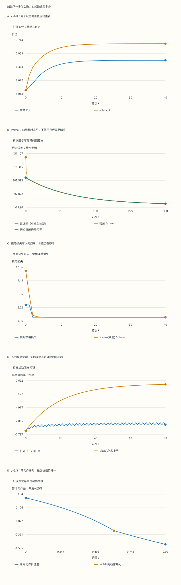

本页目录
MDP I · Bellman 算子：从未来收益到可检验的误差
前置：条件期望、sup 范数、压缩映像定理。本页目标：从一个两状态决策问题出发，证明最优价值为何存在，并分别判断价值估计、策略和近似更新是否可靠。主线限于有限状态、有限动作、已知模型与有界奖励。
1. 先问一个会改变选择的问题
你在营地，可以采集一份物资并留下，也可以付出两份物资去矿区。矿区每次收获四份，但可能把你送回营地。若你只看眼前，远行明显吃亏；若你重视未来，先付成本可能值得。
| 当前位置 | 动作 | 即时奖励 | 下一步在营地 | 下一步在矿区 |
|---|---|---|---|---|
| 营地 | 采集 | 1 | 1 | 0 |
| 营地 | 远行 | −2 | 0 | 1 |
| 矿区 | 收获 | 4 | 2/5 | 3/5 |
| 矿区 | 返回 | 2 | 1 | 0 |
用 \(\gamma\) 表示一轮之后的奖励在今天值多少。比较 \(\gamma=0.2\) 和 \(0.8\)，本页将算出营地最优动作确实不同。但“更重视未来”并不意味着任何模型的策略都按同一方向改变；这里只对表中模型作结论。
先记住两种问题。决策问题问下一步做什么；数值问题问价值还差多少。同一个动作可能很早就稳定下来，而价值估计还在缓慢移动。
2. 无限长的收益为什么能定义
设状态和每个状态可用的动作都有限，奖励满足 \(|r(s,a)|\le R_{\max}\)，且 \(0\le\gamma<1\)。策略可以根据全部过去的观察选择动作，也可以随机选择。其价值是从当前状态出发的期望折现总收益：
几何级数控制了每一条轨迹的绝对收益，所以取期望和极限不会留下一个未处理的无穷尾项。最优价值 \(V^*(s)=\sup_\pi V^\pi(s)\) 因而也有限。这里的上确界暂时包括历史依赖、随机和非平稳策略；稍后证明一个确定性平稳策略就能达到它。
有限状态时，价值向量属于 \(\mathbb R^{|\mathcal S|}\)，取 \(\|V\|_\infty=\max_s|V(s)|\)。这是完备空间。一般状态空间需要另外处理可测性；一般动作空间还要区分最大值与上确界，不能直接照抄本页的有限集合选择。
3. 一次 Bellman 更新到底做了什么
先把“从下一步开始的收益”暂估为 \(V\)。对每个动作，先计算下一状态的价值平均，再折现，最后加上这一步的奖励：
例如营地两候选为 \(1+\gamma V_C\) 和 \(-2+\gamma V_M\)；矿区两候选为 \(4+\gamma(2V_C+3V_M)/5\) 和 \(2+\gamma V_C\)。实验会保留四个候选，不只显示获胜动作。
固定一个平稳策略 \(\pi\)，不再取最大而按策略对动作平均，得到 \(T^\pi V=r^\pi+\gamma P^\pi V\)。它回答“坚持这个策略值多少”；\(T\) 则允许在这一步重新选择。\(V_{k+1}=TV_k\) 中的 \(k\) 是计算轮数，并不表示你真的又走了一轮轨迹。
若 \(V_0=0\)，\(V_k\) 还可解释为最优的 \(k\) 步收益；若 \(V_0\) 非零，它是末端加上 \(\gamma^k V_0\) 的有限时域问题。这个末端项正好解释了初值为什么最终会淡出。
4. 为什么 max 的切换不会把误差放大
对有限序列 \(f_a,g_a\)，取实现 \(\max f\) 的动作 \(a_0\)，则 \(\max f-\max g\le f_{a_0}-g_{a_0}\le\max_a|f_a-g_a|\)；交换两组数便得到绝对值版。再利用概率非负且和为一：
\(T^\pi\) 同样压缩。\(\gamma=0\) 时算子直接变成与输入无关的即时最优奖励，一次更新到位；\(0<\gamma<1\) 时由 Banach 定理得到唯一不动点 \(\bar V\)，并有 \(\|V_k-\bar V\|_\infty\le\gamma^k\|V_0-\bar V\|_\infty\)。
“唯一不动点”还不是“最优收益”的完整证明。压缩定理只处理映射；我们仍要把它的解接回策略的收益定义。
5. 不动点怎样成为真正的最优价值
由 \(\bar V=T\bar V\)，对每个状态和每个动作都有 \(\bar V(s)\ge r(s,a)+\gamma\mathbb E[\bar V(s')\mid s,a]\)。即使动作依赖整段历史，这个逐动作不等式仍成立。沿任意策略反复取条件期望，可得 \(\bar V(s)\ge\mathbb E_s^\pi[\sum_{t=0}^{n-1}\gamma^t r_t+\gamma^n\bar V(s_n)]\)。有界尾项趋零，所以 \(\bar V\ge V^\pi\) 对所有策略成立。
有限动作集合保证每个状态都有一个达到最大值的动作。选这些动作组成确定性平稳策略 \(\pi^*\)，则 \(T^{\pi^*}\bar V=T\bar V=\bar V\)。另一方面，按固定策略展开收益可得 \(V^{\pi^*}=T^{\pi^*}V^{\pi^*}\)；压缩的不动点唯一，因此 \(V^{\pi^*}=\bar V\)。这同时证明 \(\bar V=V^*\) 和最优策略存在。
可以有多个最优动作、多个最优策略，但它们共享唯一的最优价值。实验并列时选第一动作作为可重复的显示约定；并列本身不会毁掉压缩性。
6. 不知道答案，也能给价值误差设上界
定义完整模型的 Bellman 残差向量 \(d=TV-V\)，以及 \(r=\|d\|_\infty\)。由三角不等式和压缩性，\(\|V-V^*\|_\infty\le r+\gamma\|V-V^*\|_\infty\)，所以误差不超过 \(r/(1-\gamma)\)。这里的 \(r\) 是计算出的残差，别与奖励函数 \(r(s,a)\) 混淆。
还可以保留残差的正负。令 \(m=\min_s d(s)\)、\(M=\max_s d(s)\)，利用单调性和 \(T(V+c\mathbf1)=TV+\gamma c\mathbf1\)，得到：
证明下界只需令 \(L=V+m\mathbf1/(1-\gamma)\)，观察 \(TL-L=d-m\mathbf1\ge0\)。单调性使 \(L\le TL\le T^2L\le\cdots\to V^*\)。上界同理反向迭代。
这个包络可以整体在 \(V\) 上方或下方，不必把它强行画成对称误差条。实验中的解析 \(V^*\) 只用来检验上界；真正的停止判据只需要残差和已知的 \(\gamma\)。双精度算出的极小差值并非严格区间算术认证，末位舍入应与理论结论分开。
7. 策略已经很好，价值却还没算准
对当前 \(V\) 贪心得到 \(\pi\)，于是 \(T^\pi V=TV\)。同样用上一节的 \(L\) 可证明 \(V^\pi\ge L\)，再应用一次 \(T^\pi\) 得 \(V^\pi\ge TV+\gamma m\mathbf1/(1-\gamma)\)。对 \(V^*\) 的上界也再应用一次 \(T\)，得到 \(V^*\le TV+\gamma M\mathbf1/(1-\gamma)\)。相减便有：
这不是把“动作没有变化”当作证据，而是一个利用残差跨度的策略损失界。若所有状态残差相等，跨度为零，当前贪心策略已经最优，即使价值还共同差着一大截。
给初值整体加 \(c\)，归纳可得 \(U_k=V_k+\gamma^k c\mathbf1\)。每个动作候选都增加同一数，贪心动作不变；残差向量整体平移，其跨度不变，但 sup 残差可能改变。实验把共同偏移的数值路径与 \(\gamma^k c\) 并列，让你看清哪些变化影响决策，哪些只是价值的基准变化。
8. 把营地—矿区模型完整解出来
先假设营地采集、矿区收获。策略评估给 \(V_C=1/(1-\gamma)\)，\(V_M=(4+2\gamma V_C/5)/(1-3\gamma/5)\)。代回动作比较，营地的“采集减远行”为 \(3(5-8\gamma)/(5-3\gamma)\)，矿区的“收获减返回”为 \((3\gamma+10)/(5-3\gamma)>0\)。所以这个策略恰在 \(\gamma\le5/8\) 时最优。
若营地远行、矿区收获，解方程得到 \(V_C=(26\gamma-10)/[(1-\gamma)(2\gamma+5)]\)、\(V_M=(20-4\gamma)/[(1-\gamma)(2\gamma+5)]\)。此时营地的“采集减远行”为 \(3(5-8\gamma)/(2\gamma+5)\)，矿区优势为 \(2(11\gamma+5)/(2\gamma+5)>0\)，所以恰在 \(\gamma\ge5/8\) 时最优。
在阈值 \(\gamma=5/8\)，两种策略共同给出 \(V^*=(8/3,112/15)\)。在 \(\gamma=4/5\)，最优值为 \((90/11,140/11)\)。这两次代回检验，比只看到一条曲线趋平更有说服力。
实验还评估另外两种策略，完整写出 \((I-\gamma P^\pi)V^\pi=r^\pi\)。并不是所有线性系统的解都最优；必须把它代回四个动作候选，检查所选动作是否确实达到最大值。
9. 更新有误差时，为什么可能停在错误的位置
现在让 \(W_{k+1}=TW_k+e_k\)，并假设每一轮都满足确定性的全状态误差界 \(\|e_k\|_\infty\le\varepsilon\)。这项假设比“平均误差不大”强，不能未经证明就套给随机采样或神经网络。
证明从 \(E_{k+1}\le\gamma E_k+\varepsilon\) 递推展开即可。若 \(W_0=V_0\)，比较同一模型的精确路径则有 \(\|W_k-V_k\|_\infty\le\varepsilon\sum_{j=0}^{k-1}\gamma^j\)，这不需要预先知道 \(V^*\)。
尤其注意 \(W_{k+1}-W_k=(TW_k-W_k)+e_k\)。更新增量可能为零，因为误差恰好抵消了模型残差。常数正偏置会让迭代趋于 \(V^*+\varepsilon\mathbf1/(1-\gamma)\)；那里增量为零，但原始 Bellman 残差仍是 \(-\varepsilon\mathbf1\)。本页提供同向偏置和交替扰动两个确定性例子，不把它们称作实际强化学习训练。
10. γ=1 与无界奖励分别拿走了什么
把本例改成 \(\gamma=1\)，营地永远采集每轮得1，总收益发散。若从 \(V_0=0\) 做有限轮更新，营地 \(V_k\ge k\)，因此不存在本页意义下有限的最优总收益。实验仍显示每一轮更新，但最优折现值、无限时域策略损失和除以 \(1-\gamma\) 的界全部标为不适用。
非扩张本身也不保证唯一性：单状态、奖励0、\(\gamma=1\) 时 \(TV=V\)，每个数都是不动点。奖励1时 \(TV=V+1\)，没有不动点。它们是不同的失败方式。
无界奖励是另一条边界。令状态 \(n=0,1,\ldots\) 确定性前进到 \(n+1\)，奖励 \(2^n\)，\(\gamma=1/2\)，从0出发每项折现收益都为1，和仍发散。即使 \(\gamma<1\)，也不能省掉本页的有界性条件。
这些反例没有否定随机最短路、吸收模型或平均奖励理论。它们需要不同的目标或额外条件；例如适当的加权范数可以处理某些无界状态问题。后续研究可以沿着“保留什么空间、能否证明压缩或多步压缩”继续，而不是直接把折现公式的分母删掉。
11. 先预测，再核对完整计算
实验的折现数值范围为0至0.999；另设γ=1查看无折现边界。临近1到机器精度的数值求解需要更高精度，本实验不接受这段输入。理论部分的结论仍针对完整的0≤γ<1范围。
先试“共同初值25”：策略是否变化，价值误差是否变化？再试“高折现慢收敛”：策略损失与价值误差是否同步？最后切换“γ=1边界”，查表中哪些对象不再有定义。
无脚本对照：五幅图和六行末轮读数来自同一份固定记录。价值误差与策略损失分别计算。

| 预设 | γ | 轮数 | 真误差 | 残差界 | 策略损失 | 策略损失界 |
|---|---|---|---|---|---|---|
| switch | 0.8 | 40 | 0.0013410961 | 0.0013410961 | 3.55271368e-15 | 0 |
| patient | 0.99 | 300 | 11.1664587 | 11.1664587 | 2.27373675e-13 | 2.81374923e-12 |
| tie | 0.625 | 40 | 1.82460735e-08 | 1.82460743e-08 | 0 | 1.48029737e-15 |
| offset | 0.8 | 40 | 0.00198197389 | 0.00198197389 | 3.55271368e-15 | 0 |
| boundary | 1 | 40 | 不适用 | 不适用 | 不适用 | 不适用 |
| alternating | 0.95 | 80 | 0.739303186 | 0.739303186 | 7.10542736e-15 | 2.7000624e-13 |
下载六组完整记录。γ=1的无限时域量不适用；双精度末位差仍保留在完整数据中，数学界未作向外舍入认证。
12. 八个可以独立验算的问题
1. 从零开始，在γ=4/5时，前两次更新是什么？
\(V_0=(0,0)\)，四个候选是 \((1,-2)\) 和 \((4,2)\)，故 \(V_1=(1,4)\)。再更新：营地候选为 \(9/5\)、\(6/5\)；矿区候选为 \(156/25\)、\(14/5\)，因此 \(V_2=(9/5,156/25)\)。此时营地仍选采集，但无限时域最优动作是远行；有限轮贪心动作并非从第一步就正确。
2. γ=4/5、V=(0,0)时，上下包络和策略损失界是多少？
\(d=(1,4)\)，所以 \(m=1,M=4\)，价值包络为 \((5,5)\le V^*\le(20,20)\)。对零向量贪心的策略是采集/收获，其值为 \((5,140/13)\)。实际最大损失为 \(90/11-5=35/11\)；另一个状态损失为 \(140/11-140/13=280/143\)。跨度证书给 \((4/5)(4-1)/(1/5)=12\)，有效但较保守。sup残差给价值误差上界20；两者回答不同问题。
3. 为什么γ=5/8能有两个最优策略？
把两组解析值代入都得 \((8/3,112/15)\)。营地两动作候选都等于 \(8/3\)；矿区收获严格优于返回。营地选采集或远行都达到同一个Bellman最大值。价值的不动点唯一，不要求实现最大值的动作唯一。
4. 共同偏移25，γ=4/5，第3轮还差多少？
偏移为 \(25(4/5)^3=64/5=12.8\)，两个状态相同。下一轮每个动作候选都增加 \(\gamma\) 倍当前偏移，所以排序不变。残差向量变化为 \(-(1-\gamma)\gamma^k25\mathbf1\)，其跨度保持。浮点实现中应保留恒等式的末位缺陷，不把它偷偷截成零。
5. γ=0.99，要把初始误差保证缩小到千分之一，需要几轮？
条件是 \(0.99^k\le10^{-3}\)，最小整数为 \(\lceil\ln(10^{-3})/\ln(0.99)\rceil=688\)。这个比例界对任意初值成立。若把初始误差替换成 \(R_{\max}/(1-\gamma)\)，则需要明确采用 \(V_0=0\)；任意初值还应加上 \(\|V_0\|_\infty\)。它是充分的最坏情况轮数，并不证明每个模型都恰好这么慢。
6. γ=0.8、每轮两个状态都加0.1，近似迭代停在哪里？
令 \(W=V^*+0.5\mathbf1\)。平移恒等式给 \(TW=V^*+0.4\mathbf1\)，再加 \(0.1\mathbf1\) 恰等于 \(W\)，所以近似更新以它为唯一不动点。真实价值误差是0.5，完整模型残差为 \(-0.1\mathbf1\)，近似更新增量为0。当前贪心策略仍最优，因为共同平移不改变动作排序。
7. γ=1时，还能比较有界扰动与精确路径吗？
可以比较有限轮。由非扩张性，\(D_{k+1}\le D_k+\varepsilon\)；若起点相同，则 \(D_k\le k\varepsilon\)。这没有使用 \(V^*\)，因此不要求无限时域总收益存在。它不意味着两条路径分别收敛，也不允许恢复残差除以 \(1-\gamma\) 的公式。
8. 已知残差跨度0.02、γ=0.9，当前策略最多损失多少？
跨度证书给 \(\gamma\operatorname{span}(d)/(1-\gamma)=0.18\)，对每个起始状态都成立。仅知道跨度不能给绝对价值误差上界：把 \(V^*\) 整体平移任意大的常数，残差跨度仍为0，策略仍最优，价值误差却可任意大。若要保证价值误差不超过0.01，需要另查完整残差是否满足 \(\|d\|_\infty\le0.001\)。
可继续阅读 MIT 6.231 第15讲 关于单调性、压缩和加权范数的处理。该讲使用成本最小化，本页采用奖励最大化，比较不等式的方向随之相反。下一页：价值迭代、策略迭代与线性规划如何利用这些性质。